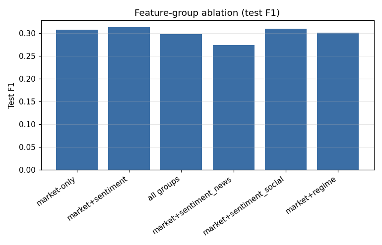
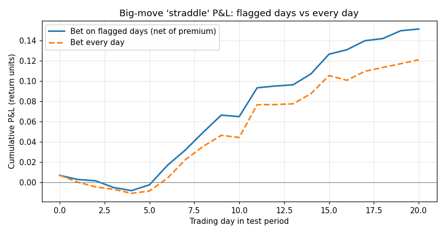
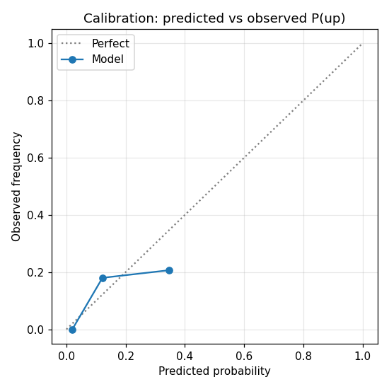
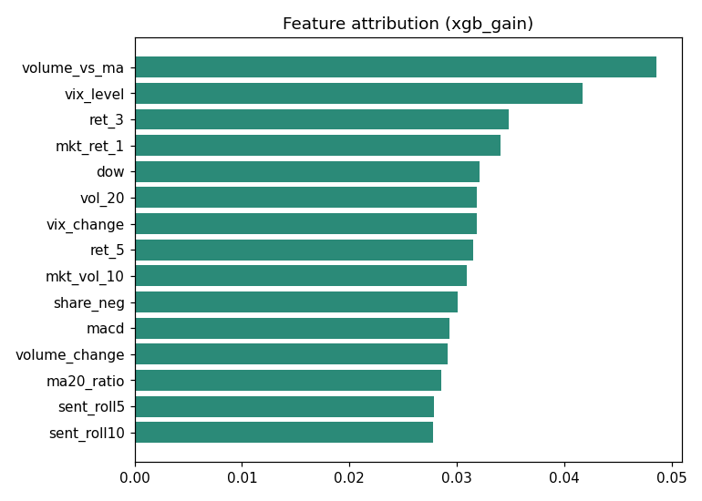

Big takeaways what this project actually found — the honest version
How it works the method, in plain language
This project tests one question: does what people say about a stock online add any predictive power beyond what its price and volume already tell you? It's built in two layers — a rigorously validated engine, and a tracker that puts the engine to work in public.
Direction, not price
Predicting tomorrow's exact price looks impressive but is mostly an illusion — tomorrow ≈ today, so you get a high score for learning nothing. Instead the model makes a humble binary call: up or down next session. Chance is ~50%, so any real edge is honest and visible.
It has to beat dumb baselines
A model only "works" if it beats trivial rules: persistence (tomorrow = today's direction), majority class (always guess the common one), and buy-and-hold. We report all three next to the model — beating accuracy but losing to buy-and-hold is a real, reported outcome.
The sentiment ablation
The headline experiment: train the same model with and without the sentiment features and compare. The difference is the answer. We repeat it across time windows (walk-forward) so it's not one lucky split, and we test every data group — not just "does sentiment help?" but "which signals help?"
No peeking at the future
The cardinal sin in finance ML is letting the model see information it wouldn't have had. We split strictly by time, fit every scaler on the past only, build features causally, and lag after-hours news to the next session. Automated tests fail the build if any leakage sneaks in.
FinBERT reads the text
Each post or headline is scored by FinBERT, a model fine-tuned on financial language (so it knows "beat" and "short" aren't ordinary words), then collapsed into daily per-stock features: average sentiment, disagreement, volume, momentum.
A live, un-fakeable track record
Every day the frozen model logs a prediction for each stock before the outcome is known, then reconciles it later. That append-only log — shown here as hit-rates and a paper portfolio — can't be cherry-picked after the fact. We always lead with the universe-wide aggregate, never a lucky single stock.
Confidence is calibrated (a "70%" call really does mean ~70%), and the whole pipeline reruns from one config file with a fixed seed. It's a signal tracker, not advice.
Live paper portfolio follows the model's signals from launch vs buy-and-hold
Ranked watchlist sorted by model confidence — every row shows its real hit-rate
| # | Ticker | Sector | Call | Confidence | Price | Sentiment (20d) | Hit-rate | Why | Trade |
|---|
Your paper portfolio trade fake money against the model — saved in your browser
| Ticker | Shares | Avg cost | Price | Value | P/L |
|---|
Fake money, for learning only. Trades fill at the latest daily close; the "vs the model" figure compares your total return to the model paper portfolio's return over its run. Not financial advice.
Scoreboard
Beat the Model guess before the model reveals its call
Global leaderboard compete with everyone — game accuracy & paper-portfolio return
🎯 Beat the Model top accuracy (≥3 rounds)
| # | Handle | Accuracy | Rounds |
|---|
💰 Paper portfolio top return vs $100k start
| # | Handle | Return | Value |
|---|
Scores are submitted from your browser — a fun, public scoreboard, not a tamper-proof one (row-level security stops editing/deleting others' rows). Be cool. 🙂
Confidence calibration when it says 70%, is it right 70%?
Today's market mood
Sector heatmap share of stocks the model calls up
The engine: how it was validated frozen model, untouched test period
Feature-group ablation

Backtest vs buy-and-hold

Calibration (test)

Feature attribution

📄 Model card — intended use, training window, limitations.